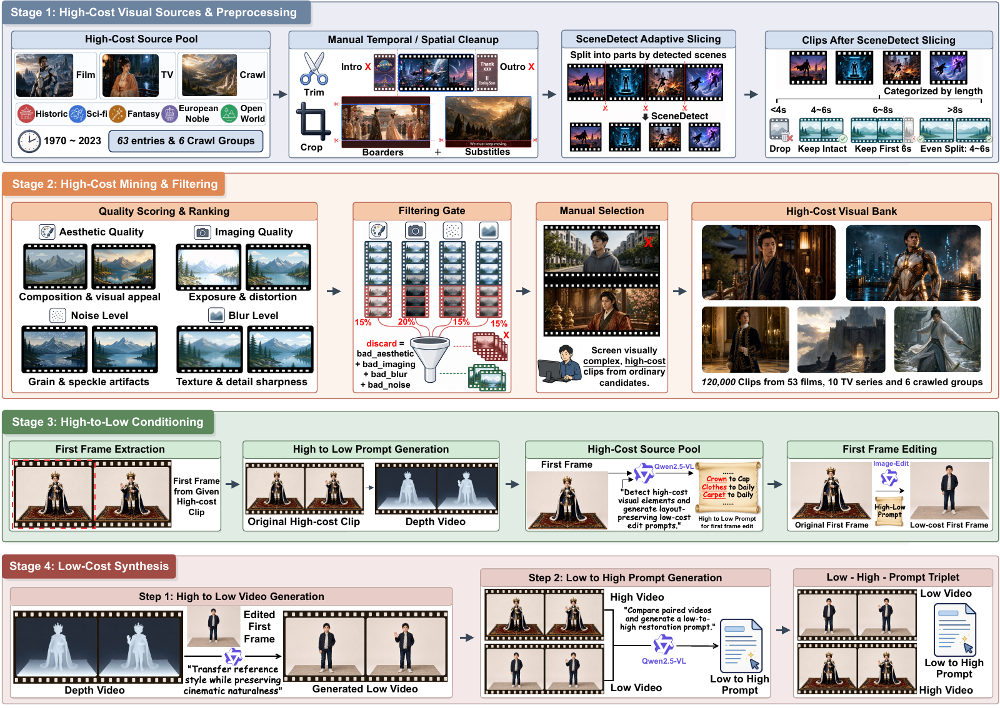
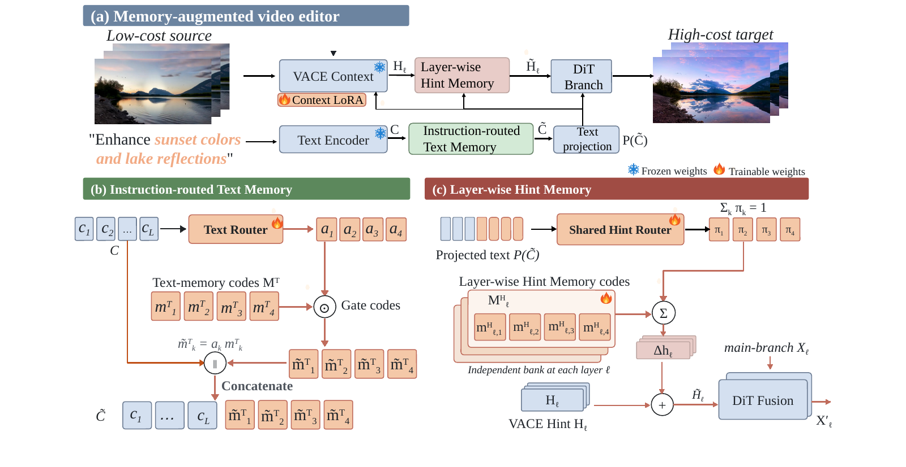

Instruction-routed Text Memory
Learnable memory codes extend the instruction representation, providing additional capacity for coordinated appearance edits.
National University of Singapore · Research project · 2026
Cinematic Video Generation from Low-Cost Inputs
National University of Singapore
The same scene. A richer cinematic world.
Upgrade costumes, lighting, materials, and atmosphere while preserving the action.
Real-world demos
Seven everyday moments, transformed by FilmTogether. Original inputs on the left; actual model outputs on the right.
Synchronized, muted web previews with full clip durations. Real-world demonstrations are separate from the benchmark below.
CineCraft-Bench · Selected results
Ten curated benchmark examples. Compare FilmTogether outputs or switch to the paired high-cost dataset references.
Full-duration model outputs · exp5 step 6000 · 20 denoising steps
Imperial costume & jewelry
Selected results
No matching examples. Try another word or choose “All styles”.
Muted, compressed web previews. Input and output clips retain their original duration. Dataset targets are reference high-cost videos, not model predictions.
The research
Casual captures and professional productions can share the same scene, yet differ in lighting, clothing, materials, and visual atmosphere. FilmTogether studies how to improve these production elements without changing the underlying identity, composition, and motion.
The project brings together CineCraft-120K, a paired cinematic editing dataset, and a dual-memory adapter that enriches textual instructions and refines source-video hints.
CineCraft-120K
A cinematic source bank, structure-preserving counterpart synthesis, and prompts grounded in the actual low-to-high transformation.

The public dataset repository is the release entry point. The videos above are a curated qualitative showcase, not an exhaustive evaluation. The full paired-video release is being assembled in batches.
Visit the dataset repositoryFilmTogether
Expand what an instruction can express. Refine what source-video features pass to the generator.

Learnable memory codes extend the instruction representation, providing additional capacity for coordinated appearance edits.
Prompt-conditioned, layer-specific corrections refine the source-video hints immediately before visual-context injection.
Explore and build
Method, data construction, experiments, and supplementary analysis.
Open PDF02 / CodePublic source, project-page assets, and release documentation.
Explore the repository03 / DatasetThe public entry point for paired videos and editing prompts.
Visit Hugging Face@misc{zhang2026filmtogether,
title={FilmTogether: Cinematic Video Generation from Low-Cost Inputs},
author={Shiying Zhang and Xiaobin Hu and Qianchi Zhang and Jiaqi Zhao
and Xiaoda Yang and Bo Yin and Shuicheng Yan},
year={2026},
url={https://shiying-zhang.github.io/FilmTogether/}
}